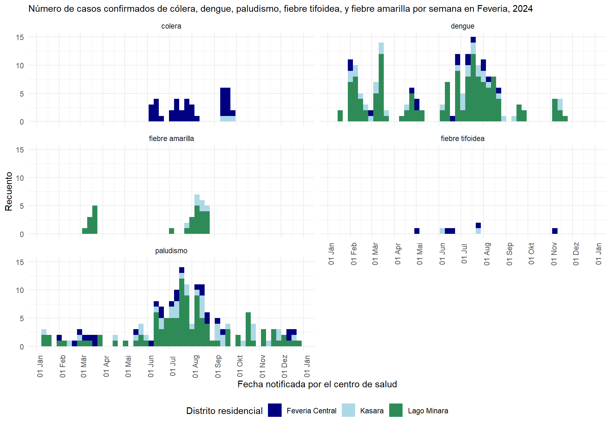

# Asegurarse de que el paquete "pacman" está instalado
if (!require("pacman")) { install.packages("pacman") }
# Instalar (si es necesario) desde CRAN y cargar los paquetes a utilizar
pacman::p_load(
rio, # importar datos
skimr, # revisar datos de forma rápida
janitor, # limpieza de datos y tablas
lubridate, # manejo de fechas
epikit, # crear categorías de edad
gtsummary, # estadísticas descriptivas, pruebas y regresión
apyramid, # crear pirámides de edad y sexo
flextable, # tablas listas para presentación
naniar, # explorar datos faltantes
remotes, # instalar paquetes para descarga de datos
tidyverse # manipulación y visualización de datos (último, para priorizar sus funciones)
)Vinculación y análisis de datos de notificación y datos de laboratorio en R
Para obtener instrucciones sobre cómo utilizar nuestros estudios de caso, consulte la guía práctica. Puede enviar sus comentarios y sugerencias a contact@appliedepi.org. También puede debatir el caso práctico o los conceptos relacionados en la Comunidad de Epi Aplicada.
Escenario
Usted es epidemiologo o epidemióloga en la oficina nacional de vigilancia de Feveria, un pequeño país tropical compuesto por tres distritos:
- Feveria Central: zona urbana densamente poblada, con infraestructuras de agua y saneamiento a veces poco fiables.
- Lago Minara: zona lacustre con buena infraestructura, pero con gran abundancia de mosquitos durante los meses más cálidos del año.
- Kasara: zona suburbana situada al otro lado de Feveria Central.
Mapa de los distritos de Feveria

Es enero 2025, y su supervisor quiere que transfiera la rutina de procesamiento de enfermedades de declaración obligatoria de Excel a R, y que realice algunos análisis de datos. Como mínimo, quiere saber:
- ¿Cuántos casos sospechosos de las diferentes enfermedades de declaración obligatoria se notificaron en 2024, y cuál fue la más frecuente?
- ¿Qué porcentaje de ellos fue confirmado?
- ¿Cuántos casos confirmados de las diferentes enfermedades de declaración obligatoria se notificaron en 2024, y cuál fue la más frecuente?
- ¿Cómo se distribuyeron geográfica y temporalmente los casos confirmados en Feveria?
Su supervisor le pide que escriba código para importar, limpiar, combinar y analizar las siguientes listas:
- Datos de vigilancia de enfermedades de declaración obligatoria de 2024: también denominados “datos de notificación”, se trata de datos de vigilancia sobre cinco enfermedades de declaración obligatoria notificadas por las clínicas de Feveria: dengue, paludismo, cólera, fiebre tifoidea y fiebre amarilla. Estos corresponden a casos sospechosos, basados en los síntomas de los pacientes. Los clínicos introducen cada notificación en un sistema en línea todos los días de la semana.
- Datos de resultados de pruebas de laboratorio de 2024: procedentes de tres grandes laboratorios de Feveria. Estos resultados corresponden a muestras tomadas de los casos sospechosos de las enfermedades de declaración obligatoria mencionadas anteriormente.
¡Vamos!
Objetivos
En este caso práctico deberá:
- Utilizar funciones clave de R para limpiar datos, remodelar bases de datos, combinar fuentes de datos y crear nuevas columnas mediante condiciones lógicas, con el fin de preparar los datos para el análisis.
- Realizar inspecciones de datos y comprobaciones de calidad en diferentes fases del proyecto, comprendiendo su importancia para garantizar un análisis fiable.
- Llevar a cabo análisis descriptivos básicos para comparar las tendencias de las enfermedades entre distintas fuentes de datos, tanto antes como después de la vinculación.
- Interpretar las diferencias en los resultados de las distintas fuentes de datos y comprender cómo éstas reflejan la estructura y el diseño del sistema de vigilancia.
Etapa 1. Instalación
1.1 Empezar en RStudio
Empiece por establecer un flujo de trabajo reproducible y bien organizado. Esto le facilitará repetir el análisis siempre que sea necesario.
Tareas:
- Configurar un proyecto en RStudio.
- Establecer subcarpetas claras para su código, datos y resultados.
- Crear un script en R, o un archivo R Markdown si lo prefiere. Asegúrese de que el propósito del script, la fecha y el autor figuren como comentarios en la parte superior del archivo.
- Extra: compruebe que el idioma de trabajo en RStudio sea el adecuado (por ejemplo, español para este ejercicio).
Haga clic para leer una pista
- Cree una carpeta donde fuardará todo el trabajo de este caso práctico. Por ejemplo, puede llamarla ‘multienfermedad_lab’ y crearla en el escritorio de su ordenador. En esta carpeta debe crear su proyecto de RStudio.
- Le sugerimos crear las siguientes subcarpeta:
scripts(para su código),datos(para sus datos), yresultados(para sus resultados analíticos).
1.2 Instalar cargar paquetes
A continuación, en su script de R, debe instalar y cargar los paquetes necesarios. Esto garantiza que las funciones que necesita estén disponibles para realizar su análisis.
Necesitará los siguientes paquetes:
{rio} (para importar datos) {skimr} (para revisar datos) {janitor} (para limpiar datos) {lubridate} (para la gestión de fechas y tiempos) {epikit} (para tareas relacionadas con epidemiología) {gtsummary} (para estadísticas descriptivas, pruebas y regresión) {apyramid} (para pirámides de edad y sexo) {flextable} (para generar tablas listas para su presentación) {naniar} (para evaluar datos faltantes) {tidyverse} (para tareas generales de manipulación y análisis de datos)
Además, necesitará {remotes} para descargar datos, algo que se explicará en la sección correspondiente a descargas.
Mientras empieza, su colega de confianza le da un codazo y le susurra: “He oído que una forma estupenda de gestionar sus paquetes… es con el paquete {pacman}”.
Paso 2. Descargar e importar los datos
2.1: Descargar los datos
Su oficina le proporciona dos archivos para su análisis, ambos correspondientes al año 2024 y actualizados al 15 de enero de 2025:
- Una base de datos de notificación de enfermedades (“notificaciones_multienfermedad.xlsx”) con los casos procedentes de 5 centros de salud.
- Una base de datos de pruebas de laboratorio (“pruebas_multienfermedad.csv”) enviada por tres laboratorios que realizan pruebas para los mismos 5 centros de salud.
Para este estudio de caso, puede descargar los datos desde la página web de Applied Epi mediante el paquete {appliedepidata}. Siga estos pasos:
- Instale el paquete
{appliedepidata}desde GitHub utilizando el comandoinstall_github()del paquete{remotes}(que ya instaló anteriormente):
# Usar la función install_github de remotes para instalar {appliedepidata}
remotes::install_github("appliedepi/appliedepidata")- Guarde las dos bases de datos en una carpeta específica utilizando la función
save_data()del paquete{appliedepidata}. Este código guardará los archivos en la subcarpetadatosdentro de la carpeta de su proyecto en RStudio. Tenga en cuenta que, si no especifica ninguna ubicación en el argumentopath, aparecerá una ventana para que seleccione manualmente la carpeta.
# Guardar los dos archivos de datos usando la función save_data() de appliedepidata
appliedepidata::save_data("pruebas_multienfermedad",
path = "datos")
appliedepidata::save_data("notificaciones_multienfermedad",
path = "datos")2.2 Importar los datos
¡Gracias a la oficina nacional y a Applied Epi! Ahora es el momento de importar los datos desde la carpeta a RStudio, para poder analizarlos.
Tarea A: Importar los dos archivos de datos descargados a su Entorno de RStudio
Lo ideal es que utilice la misma función para importar ambas bases de datos al Entorno, aunque uno sea un archivo .csv y el otro un .xlsx. A partir de ahora, cuando hablemos de Entorno, nos referiremos al panel Environment (Entorno en español) de RStudio.
Haga clic para leer una pista
Utilice la función import() del paquete {rio}, que reconoce e importa distintos tipos de archivos. De esta manera no tendrá que usar funciones específicas según el formato, como read.csv() de {base} para archivos .csv o read_excel() de {readxl} para archivos .xlsx.
Si quiere más información sobre la importanción de datos, puede consultar la sección Importar y exportar de nuestro manual de R.
Paso 3. Inspeccionar los datos
Ya tiene los datos, y ahora es el momento de ver qué historia cuentan. Tómese un momento para comprobar su contenido y su calidad.
Paso 3.1 Inspeccionar los datos de vigilancia
Tarea A: Inspeccionar primero las dimensiones y el contenido general de los datos de notificación
Utilice las siguients funciones para explorar sus datos: skim() del paquete {skimr}, names(), col() y nrow().
skim() le proporciona información muy completa sobre la estructura y el contenido de los datos. names() le mostrará los nombres de las columnas. ncol() y nrow() cuentan, respectivamente, el número de columnas y de filas de su base de datos.
Piense: ¿qué debe poner dentro de los paréntesis de cada función?
Las pista más sencilla está en su Entorno. Recuerde que el objeto que contiene los datos de notificación se llama: datos_notif_crudos.
Si necesita ayuda, haga click en el cuadro de soluciones situado debajo de las preguntas.
Tarea B: Inspeccionar las clases de columnas de su base de datos de notificación bruta
Utilice skim() del paquete {skimr} o la función class() para comprobar las clases de las columnas.
¿Recuerda cómo indicar la columna de interés dentro de la función class()? Alternativamente, puede observar el panel de Entorno en RStudio, donde aparece la clase de cada columna junto a su nombre.
Tarea C: Inspeccionar valores categóricos y omisiones
Utilice tabyl() para inspeccionar los valores dentro de las columnas categóricas, especificando en el primer argumento la base de datos y en el segundo el nombre de la columna.
Por ejemplo, este código tabula los valores de la columna Sexo. La salida muestra que los valores “masculino” y “femenino” están escritos de manera incoherente, por lo que esta columna necesitaría limpieza antes del análisis:
tabyl(datos_notif_crudos, Sexo) Sexo n percent valid_percent
F 47 0.04761905 0.05452436
FEMENINO 146 0.14792300 0.16937355
M 40 0.04052685 0.04640371
MASCULINO 172 0.17426545 0.19953596
f 154 0.15602837 0.17865429
femenino 98 0.09929078 0.11368910
m 119 0.12056738 0.13805104
masculino 86 0.08713273 0.09976798
<NA> 125 0.12664640 NAPara inspeccionar los valores faltantes (o perdidos), puede usar la función miss_var_summary() del paquete {naniar}:
miss_var_summary(datos_notif_crudos)# A tibble: 12 × 3
variable n_miss pct_miss
<chr> <int> <num>
1 Fecha de inicio 691 70.0
2 Embarazada 510 51.7
3 Resultado 197 20.0
4 Fecha del resultado 197 20.0
5 Fecha de nacimiento 168 17.0
6 Sexo 125 12.7
7 Nombre de la unidad organizativa 0 0
8 Codigo del centro de salud 0 0
9 ID de notificacion 0 0
10 Distrito residencial 0 0
11 Enfermedad notificada 0 0
12 Fecha notificada por el centro de salud/la comunidad 0 0 Paso 3.2 Inspeccionar los datos de laboratorio
Tarea A: Inspeccionar las dimensiones y el contenido general de los datos de laboratorio
Igual que con los datos de vigilancia, utilice skim(), ncol() y nrow() o consulte el panel Entorno para inspeccionar los datos de laboratorio.
Tarea B: Examinar las clases, los valores categóricos y los valores faltantes
Al igual que en el caso anterior, utilice las funciones class(), skim()o tabyl(), o inspeccione el Entorno, para observar las columnas con más detalle.
Paso 4. Limpiar y describir los datos de notificación
Los datos de notificación (datos_notif_crudos) contienen información sobre casos sospechosos, junto con datos demográficos básicos (edad, sexo, embarazo, distrito de residencia), e información sobre su fecha de inicio, fecha reportada por el centro de salud, y resultado. Algunas columnas deben limpiarse antes de continuar con el análisis, debido a variaciones en la ortografía de los valores categóricos y a que algunas no se reconocen como fechas.
Ahora comenzará a redactar fragmentos más extensos de código para realizar limpieza de datos, utilizando diversas funciones de {dplyr} encadenadas mediante pipes (que se representan de la siguiente manera: |>).
NOTA SOBRE PIPES: Los pipes permiten ejecutar varias operaciones en una secuencia continua, “encadenando” diferentes funciones. La salida de una función se convierte en la entrada de la siguiente.
Para obtener más información sobre el uso de pipes, consultar el Manual de R para Epis.
Cabe destacar que este ejercicio utiliza el pipe de base (|>) en lugar del pipe de magrittr (%>%), ya que resulta más rápido y no requiere instalación de paquetes. Si prefiere, puede utilizar el pipe de magrittr.
Paso 4.1 Limpiar los datos
Tarea A: Limpiar los nombres de las columnas y seleccionar las columnas para el análisis
Debido a problemas de calidad y de almacenamiento de datos, se recomienda elaborar una lista depurada (linelist) que contenga únicamente la información sobre el identificador único, la ubicación del caso, la enfermedad y la fecha en que la notificación fue reportada al sistema de vigilancia.
Escribir código en R para generar una nueva base de datos limpio denominado datos_notif, aplicando las siguientes tareas de limpieza:
- Renombrar las columnas para que resulten más legibles por las máquinas (eliminando espacios y mayúsculas) mediante la función
clean_names()del paquete{janitor}. - Utilizar la función
rename()de{dplyr}para que:- el nombre de la columna con la fecha en la que se notificó el caso se sustituya por un nombre más conciso
fecha_notificada. - el nombre de la columna del identificador de la notificación sea más conciso (
id_notificacion).
- el nombre de la columna con la fecha en la que se notificó el caso se sustituya por un nombre más conciso
- Seleccionar las columnas relevantes para el análisis con la función
select()del paquete{dplyr}.
Haga clic para leer una pista
Iniciar el código con el nombre de la nueva base de datos, la flecha de asignación y el nombre del objeto de datos en bruto. Esto indica que el resultado del procesamiento de los datos en bruto será asignado a un nuevo objeto denominado datos_notif.
datos_notif <- datos_notif_crudosA continuación, construya sobre este código añadiendo funciones adicionales, encadenadas mediante un pipe. Esto permite realizar varias operaciones en una secuencia continua. Primero, utilice clean_names() para estandarizar todos los nombres de columnas. Esta función reemplaza automáticamente los espacios y caracteres especiales por guiones bajos y convierte todo a minúsculas, lo que facilita el manejo de los nombres. Después, utilice rename() para asignar un nombre nuevo a una columna. Recordar que, al usar rename(), la columna ya tendrá la versión transformada por clean_names().
# datos_notif <- datos_notif_crudos |>
# clean_names() |>
# rename(NOMBRE_NUEVO = NOMBRE_ANTERIOR) |>
# select(NOMBRES_VARIABLES)Tarea B: Normalizar valores categóricos
A partir de la inspección de los datos, ya sabe que los valores de la columna distrito_residencial no están estandarizados.
Agregar una función mutate() para limpiar la columna distrito_residencial, con el fin de:
- Estandarizar la capitalización de la columna.
- Reemplazar la columna existente
distrito_residencialpor una columna depurada que contenga únicamente los siguientes valores de distrito: “Lago Minara”, “Feveria Central” y “Kasara”.
Consultar la pista para ver qué funciones se pueden utilizar.
Haga clic para leer una pista
Prueba a utilizar str_to_title() del paquete {stringr} para que la primera letra de cada palabra sea mayúscula y todas las demás letras sean minúsculas. También puede utilizar case_match() para especificar distintas erratas concretas.
Utilice la función ‘help’ de RStudio para ver cómo utilizar las funciones. Por ejemplo, escriba ?case_match en su consola para obtener la página de ayuda de la función. NOTA en case_match() - se trata de una función muy útil para sustituir o corregir valores, y sustituye a recode().
Tarea C: Trabajar con fechas
La columna correspondiente a la fecha de notificación necesita ser transformada para que sea reconocida como una fecha en R. Esto permitirá analizar tendencias a lo largo del tiempo, incluyendo semanas y meses.
Revisar los valores dentro de la columna fecha_notificada. Luego, agregar una línea al código de limpieza para convertir fecha_notificada en una clase de fecha.
Conocer la estructura de la columna permitirá utilizar la función adecuada para transformarla en clase de fecha. Se recomienda emplear alguna de las funciones del paquete {lubridate}: ymd() (para fechas escritas como año-mes-día), mdy() (para fechas escritas como mes-día-año) o dmy() (para fechas escritas como día-mes-año). Estas funciones reconocerán cualquier formato de escritura de fecha siempre que el orden sea correcto; por ejemplo, “21st August 2025” y “21-08-2024” serían reconocidos por dmy().
Tarea D: Verificar si hay duplicados
Los colegas indican que cada id_notificacion representa un caso sospechoso. Ahora se desea crear una tabla para verificar si id_notificacion se encuentra duplicado en las filas de los datos.
Haga clic para leer una pista
Existen varias formas de realizar esta verificación, pero se sugiere utilizar la función count() de {dplyr}. Esta función creará una tabla que contabiliza el número de filas por cada valor único de la columna que se especifique dentro de la función. Posteriormente, emplear tabyl() para observar la distribución de estos conteos.
Paso 4.2 Análisis descriptivo simple
Ahora puede proceder cómodamente al análisis descriptivo de los casos, ya que sus datos están limpios y sabe que una fila equivale a un caso. Utilice la función tabyl() para las siguientes tareas.
Tarea A: Contar el número de casos sospechosos de cada enfermedad diagnosticados en Feveria en 2024.
Tarea B: Contabilizar el número de casos sospechosos por enfermedad y distrito de residencia.
Utilice tabyl() para cruzar las columnas de enfermedad y distrito de residencia.
Complete la tabla incorporando diversas funciones adorn del paquete {janitor}, con el fin de visualizar distribuciones porcentuales, por ejemplo: adorn_percentages(), adorn_pct_formatting() y adorn_ns().
Escribir el nombre de la función precedido de un signo de interrogación en la consola (por ejemplo, ?adorn_ns) para consultar las páginas de ayuda correspondientes. También se puede revisar la sección sobre {janitor} en el manual de R para Epis para obtener una explicación más detallada sobre las funciones adorn_xxx().
Haga clic para leer una pista
Aquí se presenta código para comenzar. Primero, se realiza una tabla de contingencia entre enfermedad_notificada y distrito_residencial con tabyl(). Luego, al agregar adorn_percentages(), estos valores se convierten en porcentajes con muchos decimales. A continuación, encadenar mediante pipes hacia adorn_pct_formatting() para aplicar un formato porcentual adecuado y, posteriormente, hacia adorn_ns() para reincorporar los números entre paréntesis.
Tener en cuenta que las funciones adorn_xxx() deben aplicarse en un orden específico.
tabyl(datos_notif, enfermedad_notificada, distrito_residencial) |>
adorn_percentages()Para conocer los factores que contribuyen a un mayor número de diarreas, desplácese hasta el principio del estudio de caso, cuando se presentaron por primera vez los distritos.
Paso 5. Limpiar, consolidar y describir los datos de laboratorio.
A partir del trabajo realizado anteriormente en el paso 3, se identificó que los datos de laboratorio contienen únicamente información de pruebas y no incluyen datos de pacientes. Los datos ya se encuentran muy depurados, por lo que únicamente es necesario estandarizar una columna. Asimismo, se debe procesar el marco de datos de laboratorio para que contenga una fila por cada notificación, de manera que pueda unirse de forma ordenada con la base de datos de notificación.
Paso 5.1 Normalizar los resultados de las pruebas
Tarea A: Convertir cualquier valor con “P” en “Positivo”, “N” en “Negativo” e “I” en “Indeterminado”.
Crear un nuevo objeto denominado datos_lab. Esto permitirá un análisis y una interpretación de resultados más directos.
Paso 5.2 Consolidar en una fila por prueba
Tarea A: Revisar el número de muestras con varias filas
Ya se sabe que algunas muestras tienen varias filas, y que esto se debe a que el ensayo de dengue posee tres objetivos, con un resultado por fila para cada uno de ellos.
Ahora, determinar el número de muestras con varias filas.
Para ello, proceder de la misma manera que con los datos de notificación, utilizando el objeto datos_lab: primero contar el número de filas por muestra y luego crear una tabla que muestre la distribución de la cantidad de filas. Tener en cuenta que cada muestra se identifica mediante un identificador de muestra (id_muestra).
Tarea B: Consolidar a una fila por id_muestra, priorizando los resultados positivos
Como se observó en la sección 3.2, la prueba de dengue proporciona resultados para tres objetivos diferentes: IgG, IgM y NS.1. Los resultados de cada uno de estos objetivos pueden ser negativos o positivos. Sin embargo, para simplificar y consolidar los datos, se desea asignar una sola etiqueta (negativa o positiva) a cada muestra, con el fin de indicar si la muestra representa una infección activa.
objetivo | Negativo | Positivo |
|---|---|---|
Dengue IgG | 110 | 105 |
Dengue IgM | 105 | 110 |
Dengue NS.1 | 139 | 76 |
Su colega Ben, quien trabaja en el laboratorio, recomienda lo siguiente para la depuración:
- Considerar una muestra como positiva si NS.1 o IgM son positivos (ambos pueden representar una infección aguda).
- Ignorar IgG (porque un resultado positivo en ausencia de NS.1 o IgM positivos es indicativo de inmunidad tras una infección pasada resuelta).
Ahora, consolidar los resultados de la prueba de dengue en una fila por prueba, con un único valor de resultado. Utilizar filter(), arrange() y slice(), asegurándose de que cualquier muestra positiva para NS.1 o IgM se considere positiva para dengue.
Crear un nuevo objeto denominado datos_lab_pruebas.
Haz clic para leer una pista
Intentar aplicar lo siguiente para consolidar conforme a la recomendación de Ben:
- Eliminar resultados de IgG: filtrar las filas donde el objetivo sea “IgG” utilizando
filter()de{dplyr}.
- Priorizar resultados positivos de IgM/NS1: agrupar por
id_muestray ordenar las filas conarrange()de modo que cualquier resultado ‘P’ (positivo) aparezca primero.
- Filtrar al estado final: conservar únicamente la primera fila utilizando
slice(1)para obtener el resultado positivo o negativo de la muestra.
Tarea C: Deduplicar a una fila por id_notificacion, priorizando los resultados positivos
A continuación, verificar el número de pruebas por identificador de notificación en los datos consolidados.
Se observa que existen 26 filas con el mismo identificador de notificación que otra fila, pero únicamente en los casos analizados mediante microscopía de sangre total para paludismo.
datos_lab_pruebas |>
count(prueba, id_notificacion) |>
tabyl(prueba, n) prueba 1 2
Cultivo de heces 45 0
Dengue NS1/IgG/IgM 215 0
Hemocultivo 33 0
IgM ELISA 88 0
Microscopía de sangre total 451 26Se procede a investigar con mayor detalle, examinando un caso de ejemplo con id_notificacion “043228”. Esto muestra que dicho caso fue analizado en dos ocasiones, con dos muestras diferentes tomadas con una semana de diferencia. El primer resultado fue positivo y el segundo resultado fue negativo.
datos_lab_pruebas |>
filter(id_notificacion == "043228")# A tibble: 2 × 7
nombre_laboratorio id_notificacion id_muestra fecha_prueba prueba objetivo
<chr> <chr> <chr> <IDate> <chr> <chr>
1 Hospital Universitari… 043228 27c37cd8 2024-06-18 Micro… Plasmod…
2 Hospital Universitari… 043228 d2271be0 2024-06-25 Micro… Plasmod…
# ℹ 1 more variable: valor <chr>¡Si la respuesta fue que es necesario deduplicar, es correcto!
Deduplicar los datos para tener una sola fila por id_notificacion, priorizando los resultados positivos, de modo que puedan unirse con los datos de notificación.
Para ello, seguir un proceso similar al de la Tarea B, utilizando el cuadro de datos generado en dicha tarea:
- Agrupar por
id_notificacion.
- Ordenar por el valor del resultado de la prueba, de manera que los valores que comienzan con P tengan prioridad en la primera fila, seguidos por N (negativo) y luego I (indeterminado).
- Conservar únicamente la primera fila dentro de cada grupo de
id_notificacion, utilizandoslice().
- Al realizar esto, crear un nuevo objeto denominado
datos_lab_casos.
Paso 5.3 Análisis descriptivo simple
Ahora tenemos dos objetos que podemos utilizar para el análisis de los datos de laboratorio: datos_lab_pruebas y datos_lab_casos.
Tarea A: Contar el número de pruebas específicas de enfermedades, resultados positivos y resultados negativos en los datos de laboratorio de 2024.
Tarea B: Contar el número de casos sospechosos analizados en los datos de 2024.
Paso 6. Unión y tratamiento final
Ahora que ambas linelists están depuradas y cuentan con una sola fila por caso sospechoso, es posible unirlos para habilitar el análisis completo solicitado por la jefatura.
Paso 6.1 Unir los datos de notificación y los datos de laboratorio
Tarea A: Realizar la vinculación
Crear un nuevo objeto denominado datos_unidos, utilizando una función xxx_join() de {dplyr}. Conservar todas las notificaciones y añadir los resultados de laboratorio cuando estén disponibles para cada caso sospechoso.
Tarea B: Comprobar que la unión funcionó como se esperaba
Ahora comprueba tus datos y revisa.
Paso 6.2 Etiquetar los casos confirmados, descartados y sospechosos
Tarea A: Crear una columna final de “categoría de casos
Utilizar mutate() para crear una nueva columna denominada categoria_casos, actualizando la categoría de los casos sospechosos de acuerdo con su resultado de laboratorio. Las categorías deben definirse de la siguiente manera:
- Si el resultado fue positivo: Confirmado
- Si el resultado fue negativo: Descartado
- Si el resultado fue indeterminado o faltante: Sospechoso
Esto implica que todos los casos en los datos de notificación se consideran inicialmente sospechosos al momento de ser reportados, y permanecen como sospechosos si no existe un resultado de prueba concluyente.
Paso 6.3 Revisar la distribución de los resultados de laboratorio entre los casos.
Tarea A: Utilizar tabyl() para tabular la categoría de casos
Utilizar tabyl() en general, y también la tabulación cruzada por enfermedad para responder a las siguientes preguntas.
Tarea B: Evaluar el porcentaje de casos sospechosos que son realmente casos reales
Utilice tabyl() para ello una vez más, observando los resultados por enfermedad. ¡Piense en el denominador correcto!
Haga clic para leer una pista
Dividir el número de casos confirmados (es decir, aquellos con un resultado positivo) entre el número de casos confirmados más los descartados (es decir, aquellos con resultado positivo o negativo). Esto genera una tasa de positividad, que aproxima el porcentaje de casos sospechosos que realmente fueron casos. Los resultados indeterminados se excluyen porque no aportan un desenlace claro y distorsionarían la tasa de positividad.
Paso 6.4 Crear una lista con sólo los casos confirmados
Tarea A: Crear una nueva linelist llamada datos_unidos_confirmados.
Esto es lo que se utilizará en los informes oficiales de vigilancia.
Paso 7. Análisis descriptivo de los casos confirmados
Ahora que ya tiene la lista de casos confirmados de enfermedades de notificación obligatoria reportados en Feveria en 2024, está listo o lista para llevar a cabo la parte final de su análisis de vigilancia. Se trata de resumir las cinco enfermedades de notificación obligatoria por zonas geográficas y por épocas.
Sugerencia Normalmente, el análisis de vigilancia también incluye el análisis por persona. Podría ampliar este estudio de caso analizando también los casos por variables demográficas.
Paso 7.1 Describir los casos por distrito
Tarea A: Elaborar una tabla de casos confirmados por distrito, incluidos los totales, utilizando las funciones tabyl() y adorn_xxx()
Paso 7.2 Describir los casos a lo largo del tiempo
Producirá esta curva epidémica en las siguientes tareas distintas.

Tarea A: Comience utilizando ggplot() y geom_histogram() para producir una curva epidémica general para Feveria, mostrando el número de casos por semana de notificación, con barras apiladas y coloreadas según la enfermedad
Asegúrese de especificar el argumento binwidth=7 para que cada barra del histograma represente el número de casos en un periodo de 7 días.
Tarea B: Utilizar ggplot() para producir una curva epidémica que muestre el número de casos por semana de notificación, facetado (y no apilado) por enfermedad
Utilice facet_wrap() para crear fácilmente pequeños gráficos multiples, uno por enfermedad. Para entender mejor la función, puede consultar la página Facetas del capítulo sobre ggplot2 en el Manual de R para Epis.
Tarea C: Ahora añada un color de relleno a su gráfico facetado para que las barras se apilen por distrito
Tarea D: Añadir más detalles a su gráfico facetado para que esté listo para su publicación.
Puede especificar:
- El tema o diseño predeterminado del gráfico general (por ejemplo, color de fondo, aspecto de las líneas de la cuadrícula)
- El título y las etiquetas
- Los colores de las barras (con
scale_fill_manual()) - El formato y espaciado de las fechas a lo largo del eje x (con
scale_x_date) - ¡Muchas otras cosas!
Tarea E: Elaborar una tabla que resuma las fechas
Esta vez, utilice group_by() y summarize() para producir una tabla por distrito que muestre las fechas más tempranas y más tardías de las notificaciones.
Puede ajustar la tabla con filter() para crearla para un distrito a la vez.
Conclusión
¡Vaya! De acuerdo con los objetivos de este estudio de caso, usted ha hecho lo siguiente:
Ha utilizado funciones clave de R para limpiar, procesar y unir bases de datos, además de crear nuevas columnas utilizando condiciones lógicas.
Para tomar decisiones sobre el procesamiento de datos, ha realizado inspecciones y comprobaciones de los datos.
Realizó un análisis descriptivo exhaustivo para comprender las notificaciones y los datos de laboratorio, antes y después de unirlos. En relación a las cuatro preguntas originales de su supervisor, puede decir:
- ¿Cuántos casos sospechosos de las diferentes enfermedades de notificación obligatoria se reportaron en 2024, y cuál fue la más frecuente? Según los registros del sistema de vigilancia de enfermedades de notificación obligatoria, el paludismo fue la enfermedad más común en Feveria en 2024: 533 casos sospechosos de paludismo, 273 casos sospechosos de dengue, 100 de fiebre amarilla, 46 de cólera y 35 de fiebre tifoidea.
- ¿Qué porcentaje de ellos acabo confirmándose? Casi el 80% de los casos de notificación obligatoria reportados en 2024 tenían un resultado de pruebas de laboratorio en el momento en que se creó la base de datos, con algunas variaciones según la enfermedad. En total, el 56% de los casos notificados acabaron confirmándose, pero este porcentaje osciló entre sólo el 23% en el caso de la fiebre tifoidea (7 casos confirmados de 31 sospechosos) y el 95% en el caso del cólera (38 casos confirmados de 40 sospechosos). Además, la tasa de positividad fue mayor en los casos sospechosos de dengue que en los de paludismo (87% frente a 41%).
- ¿Cuántos casos confirmados de las diferentes enfermedades de notificación obligatoria se reportaron en 2024, y cuál fue la más frecuente? Los casos confirmados siguieron una tendencia ligeramente diferente a la de los casos sospechosos: la infección notificada con más frecuencia fue el dengue, con 186 casos, seguido por el paludismo (174), el cólera (38), la fiebre amarilla (33) y la fiebre tifoidea (7).
- ¿Cómo se distribuyeron geográfica y temporalmente los casos confirmados en Feveria? Feveria experimentó transmisión de dengue y paludismo durante todo el año, con un pico en verano, y se concentró en el distrito de Lago Minara. También se registraron brotes pequeños y poco frecuentes de enfermedades diarreicas, como el cólera y la fiebre tifoidea, sobre todo en la zona urbana de Feveria Central, donde podrían existir problemas de agua y saneamiento.
Por último, ha reflexionado sobre cómo la calidad y exhaustividad de los datos están determinados por procesos inherentes a la transferencia de los mismos entre los sistemas de vigilancia y los laboratorios.
Tiene un gran potencial por delante. Puede utilizar datos de vigilancia para explorar patrones por edad o sexo, calcular tasas con datos poblacionales e incluso analizar retrasos en la notificación al comparar las diferentes fechas en su base de datos.
Ha construido una base sólida y tiene las herramientas óptimas para llevar su análisis al siguiente nivel. Siga adelante: ¡le esperan descubrimientos emocionantes!
Para profundizar, consulte los demás estudios de casos o explore el Manual de R para Epis.
Código de limpieza y análisis de datos
A continuación encontrará un script con todos los pasos para la limpieza de datos y el análisis descriptivo. Observe cómo los análisis se incluyen al final, en vez de intercalarse entre los pasos de limpieza. Esta es una forma más ordenada de organizar el script.
Por motivos de brevedad, el código que aparece a continuación no incluye todas las inspecciones y comprobaciones realizadas durante el proceso, pero si desea puede crear una sección con dichas comprobaciones.
La parte superior de su script también debería contener información para ayudar al lector a entender cuál es el propósito del script, así como comentarios a lo largo del mismo. Más adelante se agradecerá haber añadido estos comentarios.
Información sobre casos de estudio
| Fecha | Cambios realizados | Versión | Autor |
|---|---|---|---|
| Julio 2025 | Primer borrador | 1 | Paula Blomquist y Alanah Jansen, Applied Epi, con el apoyo técnico de la Subdivisión de Vigilancia Mundial, Laboratorios y Sistemas de Datos de los CDC, en colaboración con TEPHINET. |
| Agosto 2025 | Versión en español | 1 | Luis Quezada, Martin Lotto y Shazia Ruybal |
Condiciones de uso
Descargo de responsabilidad La información presentada en este ejercicio y los archivos de datos asociados se han elaborado para ayudar al alumnado a alcanzar los objetivos de aprendizaje previstos. El contenido es responsabilidad de los autores y no refleja necesariamente la opinión oficial de los CDC, del Departamento de Salud y Servicios Humanos de EE. UU. o de TEPHINET.
Licencia: Este estudio de caso está bajo una licencia CC BY-NC-SA 4.0. Para obtener más información sobre cómo compartir y adaptar este estudio de caso, consulte la página escritura asociada.
Financiación Este estudio de caso fue financiado al 100% por el Acuerdo de Cooperación número NU2HGH000044 financiado por los Centros para el Control y la Prevención de Enfermedades (CDC) de EE.UU.